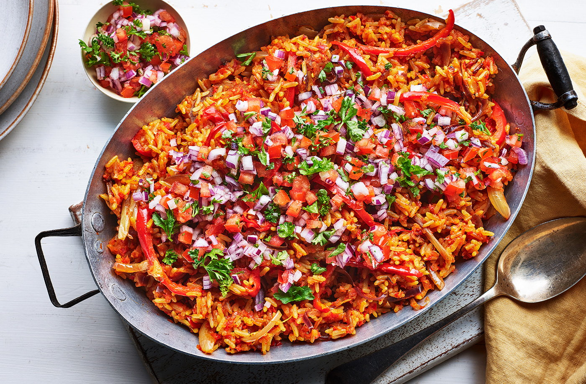

Jollof rice Recipe

Description
Jollof rice is a popular West African recipe that consists of rice cooked in a spicy tomato stew.
The heat from the scotch bonnet is much more than your usual chilli, so you might want to use half
it if you don't like things too spicy.
Ingredients
For the sauce
- 1 red onion, roughly chopped
- 3 large ripe plum tomatoes
- 2 red romano peppers (long, pointed)
- 1 scotch bonnet, optional, or use half if you don't like too much heat
- 300ml vegetable stock
For the rice
- 300g long grain rice
- 1 tbsp coconut oil
- 1 red onion, finely sliced
- 1 red pepper, finely sliced
- ½ tsp dried thyme
- 2 bay leaves
- ½ tsp turmeric
- ¼ tsp ground allspice
- 1 tsp ground coriander
- ¼ tsp ground fenugreek
- 2 tbsp tomato puree
- Generous pinch black pepper
- 20g butter
To serve
- 2 tomatoes, finely diced
- 1 small red onion, diced
- 5g curly leaf parsley, roughly chopped
Steps
- Put the rice in a bowl of water to soak while you make the sauce. Put all the ingredients for the
sauce into a blender or food processor and blend with a little salt and pepper. Pour into a lidded
saucepan and put the lid on. Bring to a medium simmer for 10 mins, until simmering, then season
generously with black pepper and a pinch of salt.
- Meanwhile, in a large lidded frying pan, add coconut oil and melt over a medium heat.
Add the onion and pepper and coat in the oil. Add the thyme, bay and all the spices.
Stirring all the time, cook for 1 min. Add the tomato puree and black pepper. Cook for 1 min,
then pour the blended sauce into the pan with the spices and bring to a medium simmer.
Strain and rinse your rice thoroughly before pouring into the sauce. Put a piece of foil over the
saucepan before putting the lid on. This will help seal in the steam.
- Turn the heat to low and cook the rice for 20-25 mins. Remove the lid, add the butter and stir the rice,
it will be cooked through and a little sticky. If it's too sticky add a little more stock or boiling water
and stir.
- To serve, top with the diced fresh tomatoes, red onion and parsley.
Back